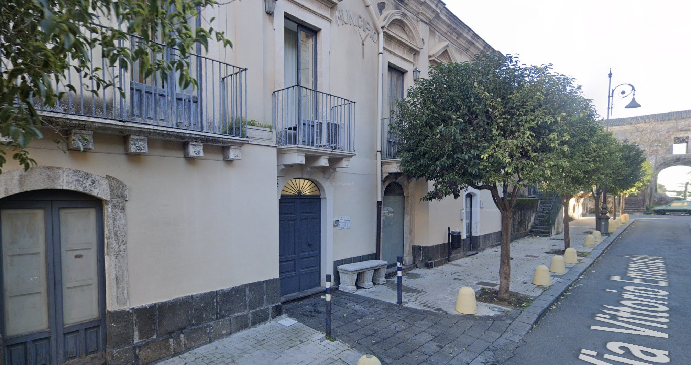

ACI SANT’ANTONIO · CATALOGO PUBBLICO
Sede e indicazioni
Indirizzo e indicazioni per raggiungere la Biblioteca Comunale di Aci Sant’Antonio, situata nell’edificio dell’ex municipio.

Sede della biblioteca
Indirizzo
Via Vittorio Emanuele, 101 - 95025 Aci Sant'Antonio (CT)
Descrizione
La Biblioteca Comunale ha sede nell’edificio dell’ex municipio, in Via Vittorio Emanuele, nel centro storico di Aci Sant’Antonio.
Per informazioni sull’accesso alla sede è possibile contattare il personale della biblioteca.
Indicazioni per l’accesso
Da Catania: Percorrere la SS121 in direzione nord verso Acireale, seguire le indicazioni per Aci Sant'Antonio e proseguire fino a Via Vittorio Emanuele.
Con i mezzi pubblici: È possibile raggiungere Aci Sant'Antonio con le linee AST o FCE da Catania. La fermata più vicina è a pochi minuti a piedi dalla biblioteca.
Parcheggio: Sono disponibili diverse aree di parcheggio nelle vicinanze della biblioteca per chi arriva in auto.
Riferimenti nel centro storico
Chiesa Madre
A poca distanza dalla biblioteca si trova la Chiesa Madre di Aci Sant'Antonio, importante edificio religioso e culturale del paese.
Municipio
Il nuovo Palazzo Municipale si trova nelle vicinanze, con i principali uffici comunali e servizi per i cittadini.
Piazza Maggiore
Piazza Maggiore è un riferimento per raggiungere il centro storico.
Domande frequenti
Dove si trova la Biblioteca Comunale di Aci Sant'Antonio?
Come raggiungere la biblioteca?
- In auto, seguendo la SS114 o la SP4, con possibilità di parcheggio nelle vicinanze
- In autobus, con le linee urbane che fermano in prossimità del centro
- A piedi, se ti trovi già nel centro di Aci Sant'Antonio (zona Piazza Maggiore)
C'è un parcheggio vicino alla biblioteca?
Quali luoghi di interesse ci sono vicino alla biblioteca?
- Piazza Maggiore, cuore del centro cittadino
- La Chiesa Madre di San Antonio Abate